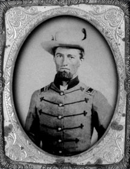

|

NAME: Charles Murrah Thomas
BORN: 1828
DIED: 1905
ALLEGIANCE: Confederate
HIGHEST RANK: Captain
UNIT: Jeff Davis Guards, Company A, 19th Mississippi
(first volunteer regiment raised in Mississippi), and
Company B, 11th Regiment Mississippi Cavalry
RECORD: Thomas enlisted May 21, 1861, and was
mustered into the 19th Mississippi's Company A, Davis
Guards, where he was elected first lieutenant. He was
promoted to captain after the fight at Williamsburg and then
led his company in the great battles of the Seven Days'
campaign: Beaver Dam Creek, Gaines' Mill, Frayser's Farm and
Malvern Hill. Thomas was wounded at the Second Battle of
Manassas in 1862. In 1863 he served with Company B, 11th
Regiment Mississippi Cavalry throughout Mississippi, Alabama
and east Louisiana. He was honorably discharged at Meridian,
Miss., on May 10, 1865.
|
|
Captain Charles Murrah Thomas was born near Rockingham in
Richmond County, North Carolina. His family moved to Noxubee
County, Mississippi, when he was 12 years old. Though he had
only a brief formal education, he was bright and became
well-informed on many subjects. He was also a born leader,
and prior to the war he served in the legislature for
Noxubee County in 1856.
In 1861 he enlisted in the Confederate Army and assisted
in raising Company A (the "Jeff Davis Guards") of the 19th
Mississippi Infantry Regiment. Jake Macon was captain, and
Thomas was elected first lieutenant under the command of
Colonel "Kit" Mort and Lt. Col. L.Q.C. Lamar.
At Williamsburg, the first battle in which Company A
fought, Captain Macon received a mortal wound in the first
charge. He died two days later. Thomas replaced him as
captain.
Thomas in turn was wounded at the Second Battle of
Manassas in 1862, and that wound incapacitated him from
further service with the infantry. He would suffer pain the
rest of his life as a result of the injury.
Returning home in an attempt to regain his health,
Captain Thomas married Rachel LaDosca Chambers in 1863.
Despite his continuing health problems, Thomas raised
Company B, 11th Regiment Mississippi Cavalry, and served the
balance of the war as captain of that company, participating
in campaigns in Mississippi and Tennessee.
After the war, a militia was formed to protect the
citizens of Noxubee County, and Charles Thomas was elected
its captain. In the fall of 1865, he was elected sheriff of
the county and held that office until put out by
Reconstruction radicals. He did his part in ridding his
state and county of radical rule and was again elected
sheriff in 1867 and afterward elected twice to the
legislature.
The old captain died full of years and honors, apparently
peace with the world. Only two of his fellow Company A
veterans, Henry Jackson and Emmett Cavett, were present at
his burial. Fifteen other Confederate veterans were in
attendance. Probably more would have been there had they
received notice of his death, for Thomas was unanimously
esteemed.
Source: Civil War Times Illustrated
44:4 (October 2005), 12.
|